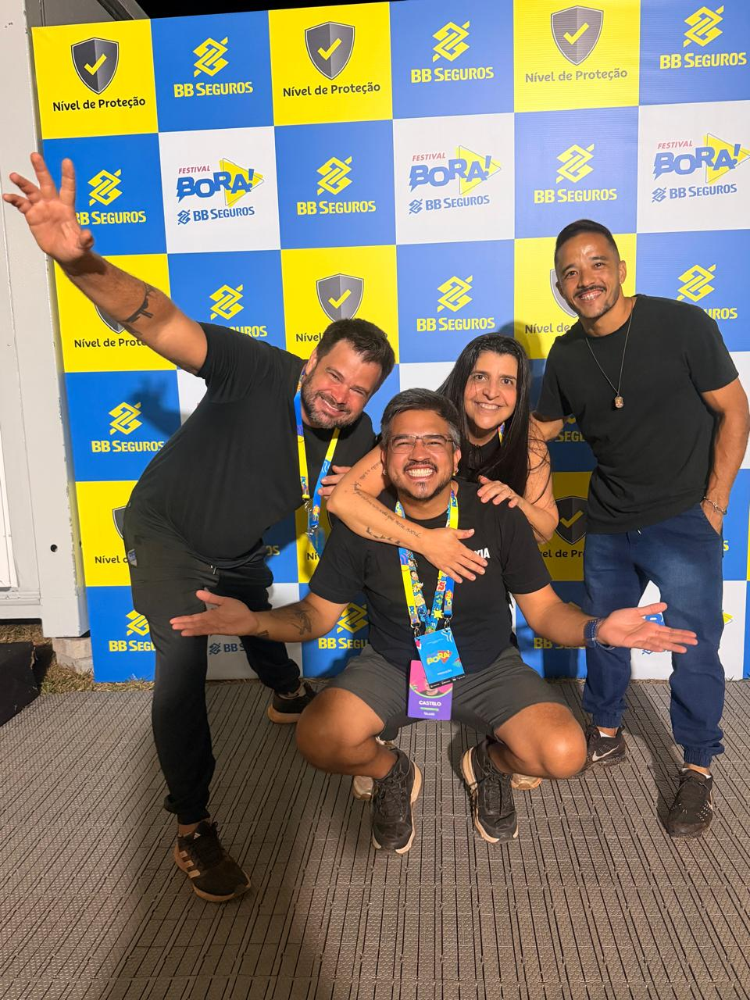
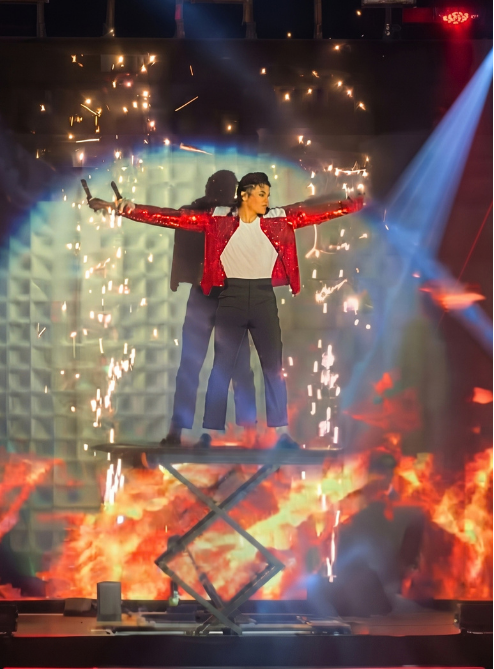
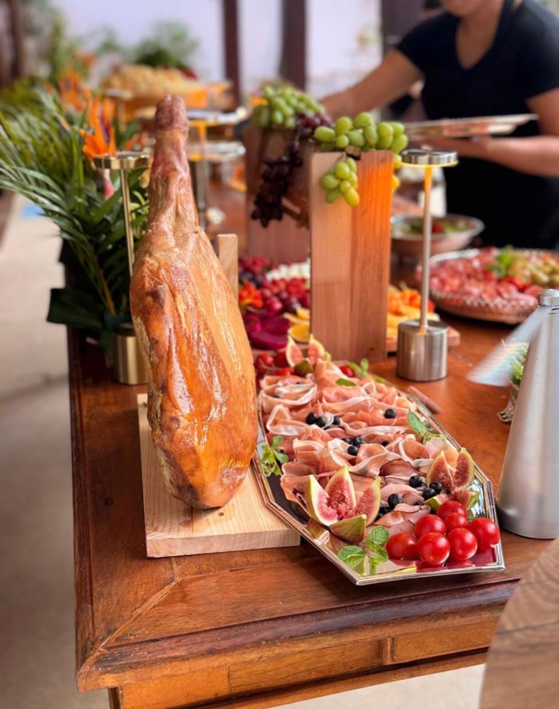
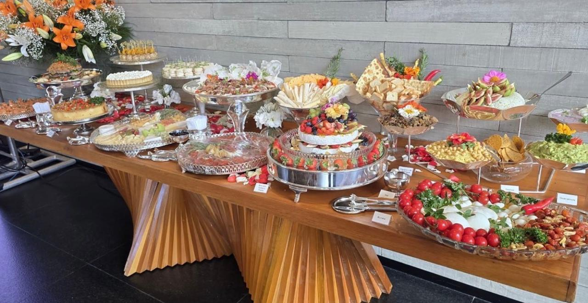
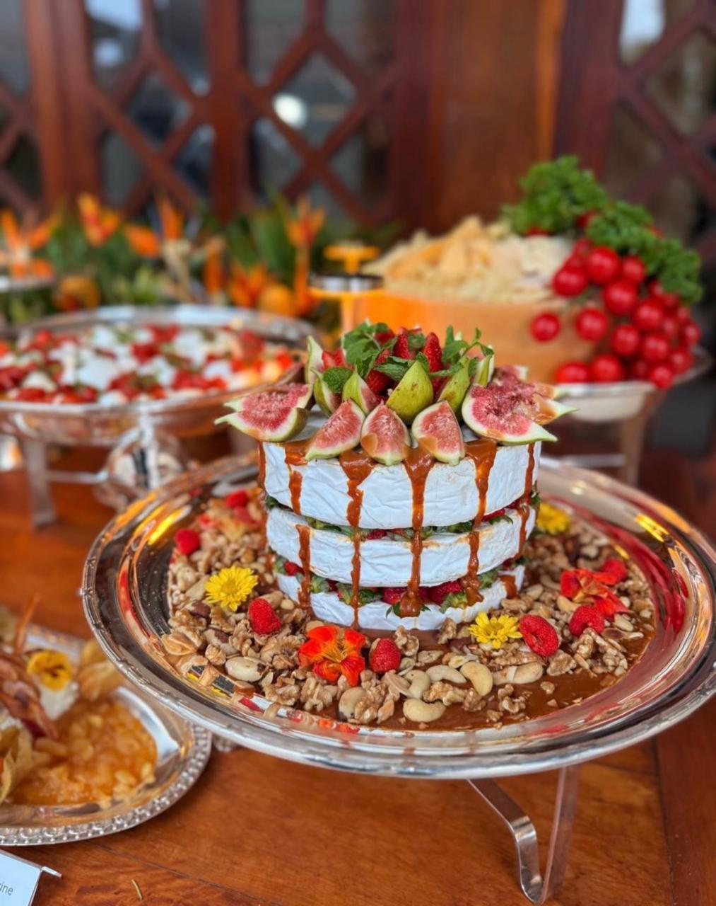

Criatividade, excelência e inovação em cada projeto realizado.
Ver Projetos
A KcomK Produções nasceu para caminhar junto com você em cada etapa, transformando seus sonhos em momentos inesquecíveis.
Acreditamos que a verdadeira excelência está nos laços que construímos e no cuidado com cada detalhe.
Mais do que gerenciar projetos, estamos aqui para criar memórias reais, com a dedicação, o carinho e o profissionalismo que você e seu público merecem.

A montagem de camarins da KcomK Produções é planejada para oferecer o máximo de conforto, sofisticação e funcionalidade aos artistas e convidados.
Curadoria de buffet sofisticado, mesas de frios e apresentações gastronômicas exclusivas para eventos corporativos e sociais de alto padrão.


Organização detalhada de mesas com arranjos florais, doces finos e finger foods requintados, criando ambientes acolhedores e elegantes.
Produção de grandes festivais e ações promocionais de marcas renomadas, garantindo engajamento, infraestrutura completa e suporte integral.

O que dizem sobre a nossa entrega
"Tô passando pra deixar um recado especial. Agradecer o pessoal da KcomK Produções pelo camarim deles, por todo o carainho e por toda a assistência. Todo mundo muito legal e muito simpático"
- Philippe Maia"Bem acolhido, a gente tem pessoas que estâo preparando tudo para que a gente possa brilhar na hora de subir no palco! Por isso, quero compartilhar o quanto eu admiro essa galera da KcomK"
- Maria Paula"Tamo aqui para agradecer a Karina por estar sempre aqui cuidando dos camarins em todos os eventos. Camarim show de bola!"
- Henrique e Ruan